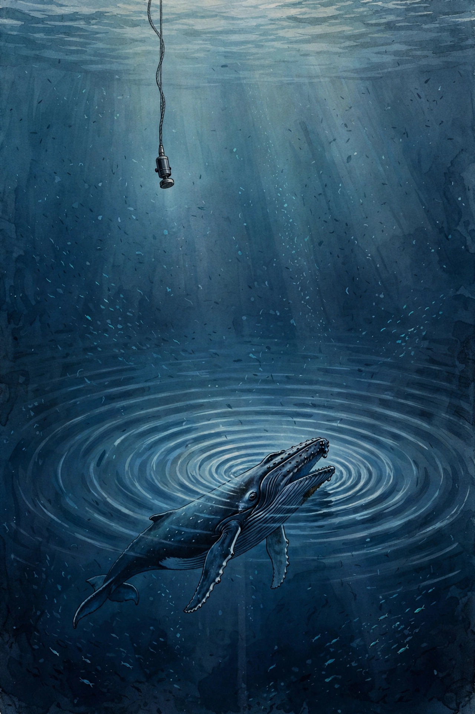

Article 67 · Biota · AGI Future Foundation
Listening to the Ocean: What the Deep Soundscape Reveals About Life Below
Whale song, fish choruses, and the rising tide of human noise, and what hydrophones can and cannot tell us

Illustration: a whale singing in the deep ocean, with a hydrophone listening. Generated illustration, not a photograph.
The ocean is loud
The popular image of the ocean is silence: a diver descending into blue quiet. The reality is the opposite. The ocean is one of the loudest places on Earth, and it has been loud for far longer than humans have existed. Sound travels roughly four and a half times faster in water than in air, and low frequencies travel exceptionally well. A loud, low-frequency source in the deep ocean can be detected hundreds or even thousands of kilometres away. Life evolved to use that physics. Whales, dolphins, and fish conduct much of their existence through sound, the way humans conduct much of theirs through sight. To understand the ocean, you have to listen to it, because listening is how its inhabitants understand each other.
The soundscape of the ocean has three parts, and scientists name them plainly. Biophony is the sound of life: whale calls, dolphin clicks, fish choruses, snapping shrimp, the scrape of urchins, the crunch of grazers. Geophony is the sound of the Earth itself: waves breaking, rain on the surface, earthquakes, underwater volcanoes, ice cracking and groaning in polar seas. Anthrophony is the sound of us: ship propellers, seismic airguns, naval sonar, pile driving for offshore wind farms and bridges, recreational boats. For most of the ocean’s history, biophony and geophony were the whole soundscape. Anthrophony is new, it is growing, and it overlaps directly with the frequencies life uses most. That overlap is the central problem of this article.
A hydrophone is the instrument that makes the soundscape visible. It is essentially an underwater microphone, except that instead of capturing changes in air pressure, it detects underwater pressure fluctuations and converts them into electrical signals, which can then be amplified, recorded, and turned into digital audio for analysis. Hydrophones allow researchers to listen to whale and dolphin vocalisations, reef soundscapes, vessel noise, storms, seismic events, and underwater construction. A single hydrophone can listen for months or years without a human present, in weather that would stop a research vessel, in darkness that would stop a camera, at depths no diver can reach.
Who is singing
The most famous voices in the ocean belong to the baleen whales. Humpback whale songs are long, structured vocalisations, typically produced by males, that can last for hours and follow patterns that change over seasons and years. Blue whale calls, below 20 hertz, are among the lowest-frequency sounds made by any animal, and in theory they can be heard across ocean basins. Fin whales, the second-largest animals ever to have lived, produce deep pulses that carry for enormous distances. These animals use low-frequency sound precisely because it travels: in an ocean where light fades within tens of metres and chemical cues disperse, a low call is the only signal that can reach a mate, a calf, or a rival hundreds of kilometres away.
Toothed whales live in a different frequency world. Orcas use short, high-pitched clicks for echolocation, the emission and interpretation of sound waves to navigate and find things, and shorter calls for social communication rather than the continuous melodic song of the humpback. Sperm whales produce clicks so powerful they are among the loudest sounds made by any animal, used to hunt squid in the dark at depths of a kilometre or more. Dolphins whistle, burst-pulse, and click in a near-constant stream of social sound. Each population has its own dialect: orca calls are distinct by pod and population, and humpback songs vary by ocean basin. A hydrophone that records a call can therefore sometimes tell you not only the species but the population, the season, and the behaviour, whether the animal is feeding, travelling, socialising, or singing.
Below the whales, the ocean is full of smaller voices that matter just as much. Many fish produce sound by vibrating their swim bladders, a gas-filled organ that works like a drum, or by grinding teeth and stridulating body parts. Some fish chorus at dawn and dusk in the same crepuscular rush hour that fills a forest with birdsong, and the bocaccio rockfish off California is monitored specifically for its chorusing. Snapping shrimp, with one oversized claw that snaps shut fast enough to create a collapsing cavitation bubble, produce a crackle so pervasive that it can interfere with sonar equipment. These voices are not decoration. For a larval fish drifting in the open ocean looking for a home, the sound of a reef is a beacon. For a whale calf separated from its mother, a call is a lifeline. Sound is infrastructure in the ocean, and the animals that depend on it have no alternative channel to fall back on.
| Sound source | Frequency range | Why it matters |
|---|---|---|
| Blue whale calls | Below 20 Hz | Lowest-frequency animal calls; travel across ocean basins |
| Fin and humpback calls | Low frequency, below 200 Hz | Overlap directly with shipping noise, the worst-affected band |
| Orca clicks and calls | Higher frequency, short clicks | Echolocation and pod communication; distinct by population |
| Sperm whale clicks | High frequency, very loud | Deep hunting in darkness; clicks among the loudest animal sounds |
| Fish choruses | Low to mid frequency | Dawn and dusk choruses mark feeding and spawning; monitored as ecosystem signals |
| Snapping shrimp | High frequency crackle | Dominant background sound on reefs; can interfere with sonar |
| Shipping (propeller cavitation) | Mostly low frequency | The largest human contribution to ocean noise |
| Seismic airguns | Low frequency pulses | Fired every 10 to 15 seconds for weeks during surveys |
| Pile driving and sonar | Broadband, often impulsive | Short, intense events that can injure hearing at close range |
How we listen: cables, sanctuaries, and streaming hydrophones
Listening to the ocean at scale took three inventions: the cabled observatory, the long-term sanctuary programme, and the streaming hydrophone network.
The cabled observatory solved the power and data problem. A battery-powered recorder must be retrieved to be read, which limits how long it can listen and how much it can record. A cabled observatory is plugged into shore power and a fibre-optic data link, so it can listen continuously and stream its data to land in real time. The Monterey Accelerated Research System, known as MARS, is the best-documented example. In July 2015, researchers from the Monterey Bay Aquarium Research Institute deployed a broadband, digital, omnidirectional hydrophone on Smooth Ridge, near the MARS node in the centre of Monterey Bay National Marine Sanctuary, at a depth of 891 metres. The hydrophone, an Ocean Sonics icListen with a bandwidth of 10 hertz to 200 kilohertz, has been recording almost continuously since 28 July 2015. Its data are processed into standardised spectra so that soundscapes can be compared across sites and years, and the resulting dataset is archived with NOAA’s National Centers for Environmental Information. One hydrophone, listening for a decade, has produced a record of a deep soundscape that no expedition could have matched.
The sanctuary programme solved the coverage problem. In 2018, NOAA’s Office of National Marine Sanctuaries began coordinated ocean sound monitoring in Monterey Bay through the Sanctuary Soundscape Monitoring Project, building on acoustic work in the area that dates back to United States Navy measurements near Point Sur Ridge in the 1950s. The programme now maintains four monitoring locations in the sanctuary alongside the MBARI hydrophone, each chosen to capture a different soundscape: one in the middle of the bay near Monterey Canyon, to monitor foraging whales, chorusing fish, and vessel noise; one offshore near shipping transit lanes, on a deep slope with decades of broadband sound data; and one in La Cruz Canyon off the Big Sur coast, to monitor bocaccio rockfish chorusing and blue whale seasonality. Together these sites have provided insights on cryptic species, whale migration patterns and drivers, methods for detecting fish sounds, and the steady rise in ocean noise levels. The lesson is organisational as much as technical: a soundscape is only useful if someone keeps listening to it, year after year, with the same methods, so that change can be separated from noise.
The streaming network solved the access problem. Ocean Song, a real-time passive acoustic monitoring project, ingests audio from 13 configured hydrophone sources across the Pacific and Atlantic, monitored continuously by machine learning, detecting whale vocalisations as they happen. Its stations range from the deep Monterey Canyon, at 900 metres depth, to the glacial waters of Disko Bay in Greenland. Two detector paths currently surface humpback and blue-whale candidates; other models remain in research or shadow evaluation. Available recordings include audio and spectrograms for listening and review, and source availability varies. A soundscape is a time series, and a time series needs continuous sampling.
The rising tide of noise
The ocean is louder than it used to be. Shipping, seismic surveys for oil and gas, naval sonar, pile driving for offshore wind farms, and recreational boating have added a near-continuous mechanical background to a soundscape that evolved over millions of years to be mostly biological and geophysical. Measurements off California recorded roughly a doubling in low-frequency noise intensity per decade in the second half of the twentieth century. That is a large change in a short time, and it is concentrated in exactly the frequencies that matter most: the low-frequency band below 200 hertz, where blue, fin, and humpback whales communicate.
A container ship at cruise speed generates broadband noise primarily from propeller cavitation: collapsing bubbles produce intense pulses across a wide frequency range, with most energy concentrated in the low-frequency band where baleen whales communicate. A single ship is loud. A shipping lane is a continuous wall of sound. And the lanes are where the whales are, because the same coastal waters that carry trade also carry migration routes, feeding grounds, and calving areas. The overlap is not an accident. It is a consequence of the fact that both ships and whales use the same productive coastal waters, and the ships arrived later and louder.
Seismic surveys add a different kind of noise: impulsive, regular, and inescapable. Oil and gas exploration uses airgun arrays that fire compressed-air pulses into the water every 10 to 15 seconds, often for weeks at a time, surveying thousands of square kilometres. Naval sonar, pile driving, and offshore construction add short, intense events that can injure hearing at close range and disrupt behaviour at long range. Recreational boating adds a diffuse, seasonal layer in coastal waters, where small boats with loud engines operate in the same shallow bays where dolphins socialise and fish spawn.
The animals respond, and the responses are measurable. Baleen whales using low-frequency calls have been recorded calling less, calling louder, changing call frequency, or shifting the timing of their calls in response to nearby ship traffic. Dolphins in busy ports have been observed using higher-pitched calls, essentially shouting to be heard over the din. These responses have a name in the literature, the Lombard effect, after the human tendency to speak louder in a noisy room, and they have a cost. Calling louder takes energy. Calling longer takes time. Calling higher may be less effective, because the animal’s call evolved for its frequency. Stopping calling entirely means not communicating at all. In the waters of the Pacific Northwest, where the Southern Resident killer whales are already under pressure from depleted chinook salmon and pollution, noise is the third stressor in what researchers call the three pressures threatening the population: prey, pollution, and disturbance. Every masked call is a potential breakdown in the social communication that keeps a matrilineal pod functioning. The sound is not a metaphor for the problem. The sound is the problem, because the medium is the message and the medium is now full of ships.
The consequences go beyond behaviour. Whale strandings have been correlated with sonar exercises, and fish populations in heavily trafficked shipping lanes show signs of chronic stress. The word correlated matters: a correlation is not proof of causation, and strandings have many causes. But the pattern has been reported often enough, and the mechanism is plausible enough, that regulators treat naval sonar as a genuine risk and manage it with mitigation measures, including seasonal restrictions and monitoring. The honest statement is that noise is a stressor whose effects are documented at the level of behaviour and communication, suspected at the level of population health, and still uncertain at the level of long-term population trends. That uncertainty is not a reason to do nothing. It is a reason to keep listening, because the listening is what will resolve it.
Machine listening, and an honest failure
Hydrophones generate continuous audio streams, thousands of hours per day across a distributed network. Manual review is impossible at that scale. Vocalisations are transient, often buried in ambient noise, and span frequency ranges from 10 hertz infrasound to 100 kilohertz echolocation. The only way to listen at that scale is with machine learning: detectors trained to recognise the spectrogram shape of a humpback song, a blue whale call, an orca click train, and to surface candidates for human review. This is the same family of technology that identifies birds from recordings, and it faces the same problem in the ocean that it faces in the forest: the world is full of sounds that are not the target, and many of them sound like the target.
Ocean Song provides the most instructive example in this article, precisely because it publishes its failures alongside its successes. Its orca detector is not currently surfaced. Detections were withheld from 28 July 2026 after a 60-clip audit measured 10.9 percent precision, with a 95 percent confidence interval of 4.7 to 23 percent. The clips were mostly vessel and impulsive noise, and precision did not improve at higher confidence. Scoring continues for recalibration. Its sperm whale detector runs in shadow, scoring only, because its current model produces too many false positives: boat knocking mimics sperm whale clicks. Its fin whale and dolphin detectors are disabled until validated detectors replace them. Only the humpback and blue whale detectors are surfaced, and the project states plainly that automated candidates are not individual scientific confirmations. That is how machine listening should be reported: with precision numbers, with confidence intervals, with the false positives named, and with the withheld detectors withheld. A detector that claims to find orcas and is wrong nine times out of ten is worse than no detector at all, because it fills the record with noise and teaches its users to ignore it. The orca detector’s story is a model of the honesty this whole programme practises: publish the audit, withhold the claim, keep working.
The same discipline applies to the claims made about what acoustic monitoring can diagnose. A hydrophone can tell you that a whale was present, that a ship passed, that a chorus happened at dawn. It cannot tell you, on its own, that a population is healthy, that a habitat is recovering, or that a management action worked. Those conclusions need abundance estimates, demographic data, and controlled comparisons, and the hydrophone is one instrument among several. The WAVE agent’s bioacoustics work, covered in its own series in this programme, uses the same discipline: its live species predictor is BirdNET, a model built by Cornell and Chemnitz that identifies birds first, covering more than 6,500 species, and it does not classify reef sounds or identify fish. Marine mammal classification on the site is cross-reference only, against the Watkins Marine Mammal Sound Database, not direct classification. Stating those limits is not modesty. It is the condition under which the work that is real can be trusted.
Quieting the ocean
If the problem is noise, the solutions are, in principle, simple. They are also, in practice, hard, because they require changing how ships, surveys, and construction operate in a shared ocean. The most effective mitigation measures are also the least glamorous: slower ship speeds, propeller cavitation control, and seasonal area closures. A slower ship is a quieter ship, and a ship that avoids a whale’s feeding ground during the feeding season does not need to be quiet at all. The evidence for slower speeds is strong enough that vessel speed restrictions and quiet zones are now part of the conversation in orca critical habitat in the Pacific Northwest, where volunteer-gathered acoustic data has contributed to discussions about speed limits. The same logic applies to seismic surveys, which can be timed to avoid migration and breeding seasons, and to pile driving, which can be managed with soft starts, bubble curtains, and seasonal windows.
Policy has begun to catch up with the science. In June 2016, NOAA released a draft Ocean Noise Strategy Roadmap, intended to inform and coordinate agency-wide action in marine soundscape management. The roadmap identifies the National Marine Sanctuaries as key assets for achieving the ecological goals of acoustic habitat protection, and the sanctuary monitoring programme in Monterey Bay is the direct descendant of that decision. The idea behind the roadmap is that acoustic habitat is habitat: a place where animals can hear each other is as much a protected resource as a place where they can feed. That reframing matters, because it turns noise from a nuisance into a managed quantity, with targets, monitoring, and accountability. The roadmap was a draft, and the work of turning it into practice is still under way, but the direction is clear. The ocean’s soundscape is now recognised as something worth managing, not merely something worth studying.
There are reasons for measured optimism. Shipping noise can be reduced by design, and the shipping industry has begun to study quiet ship designs, partly because quieter propellers are also more efficient. Marine protected areas that restrict vessel traffic create quiet refuges, and the acoustic benefits of those refuges can be measured directly with hydrophones. The Kunming-Montreal Global Biodiversity Framework’s 30 by 30 target, to conserve at least 30 percent of marine and coastal areas by 2030, creates a framework in which acoustic habitat can be part of what “effectively conserved” means. None of this is a guarantee. A target is not a result, and a quiet zone on paper is not a quiet zone in the water. But the measurement tools now exist to check whether the quiet is real, and that is a new capability.

Chart: average change in monitored wildlife population size, 1970 to 2020. Marine populations fell by 56 percent, less than freshwater at 85 percent and terrestrial at 69 percent, but still by more than half. Source: WWF and ZSL, Living Planet Report 2024.
Biota’s anchor: an open ocean, rendered as a forest
Biota’s anchor sits at -38.713, -27.248, in the open South Atlantic. The world data records the anchor and the forest biome as separate facts, and the separation is worth dwelling on. The coordinates are ocean. The biome is forest. The world is a forest interpretation of an ocean anchor, and the world file says the biome is a design choice. That is not a mistake to be corrected. It is a deliberate juxtaposition, and it is honest as long as it is stated. A visitor who walks Biota’s forest floor is walking a design, not a survey, and the world does not claim otherwise. The sign at the door reads “Biota.blockchain, powered by AGI Corp”, and the Host Advisor character tells visitors plainly that the world is a web 3D interpretation, that the stewards are human, and that the decisions are theirs.
What would a listener actually hear at -38.713, -27.248? This article will not invent an answer. No hydrophone is deployed there, no survey is cited for that location, and no recording exists in the sources used here. What can be said, from the science above, is what a hydrophone in the open South Atlantic would be listening for: the low calls of blue and fin whales travelling across basins, the clicks of sperm whales hunting in the deep, the geophony of wind and waves and distant storms, and the anthrophony of any shipping that passes through. The open ocean is not empty. It is the largest habitat on Earth, and its soundscape is dominated by the animals that can use it at scale, which are the great whales. That is a general statement about open-ocean soundscapes, not a claim about this coordinate, and the difference matters. Biota’s value as a world is not that it reproduces a place. It is that it gives a visitor a place to stand while learning what listening means, and a set of characters who teach the rules that govern it: permission first, the record kept, the decision made by humans.
The world’s own teaching reinforces that point. The Healthcare Data Exchange station teaches that data moves only with permission. The Governance Hall teaches that a vote is read, discussed, cast, and recorded. The Steward Council seats are held by humans. The alignment gate checks plans in public. These are not ocean facts. They are governance facts, and they are the reason Biota belongs in the Foundation’s programme at all: a world that teaches biology alongside the rules for deciding what to do about it is a rehearsal for stewardship, and stewardship is the Foundation’s actual work.
What listening can and cannot prove
The reader who finishes this article should carry away a short list of distinctions, because they are the difference between being informed by acoustic science and being misled by it.
- Presence is not abundance. A hydrophone that records a whale proves one whale was there. It does not prove how many there are, or whether the population is growing or shrinking. Abundance needs survey design, not just detection.
- A call is not a census. Animals call when they choose to, and some species are quiet for long periods. Silence on a recording can mean absence, or it can mean a quiet animal, a broken hydrophone, or a masking ship.
- A detector is not a scientist. Machine listening produces candidates, not confirmations. The precision of the detector, and the audit behind it, are part of the result. A detector with 10.9 percent precision that is reported honestly is more useful than a detector with unknown precision that is reported as fact.
- Noise is a stressor, not a verdict. Behavioural responses to noise are documented. Population-level consequences are still uncertain. Both statements are true, and they should be stated together.
- Quiet is measurable. A protected area’s acoustic benefit can be heard directly. That is a new capability, and it is the strongest argument for listening as a management tool rather than only a research tool.
The ocean’s soundscape is a record of life doing what life does, in the medium life uses. Listening to it is not a substitute for seeing, counting, or protecting. It is a way of extending all three into the largest, darkest, least accessible habitat on the planet, and of doing so continuously, for years, without disturbing the animals being heard. The hydrophone networks now operating, from the cabled observatory in Monterey Bay to the streaming stations across two oceans, are the beginning of a permanent listening programme for the sea. Biota, as a world, can teach a visitor why that programme matters. The listening itself belongs to the hydrophones, the researchers, and the institutions that keep them in the water, and to the readers who learn to hear a whale call as evidence and a ship’s drone as a question.
Glossary
- Anthrophony: Sound produced by human activity, including shipping, seismic surveys, sonar, and construction.
- Biophony: Sound produced by living organisms, including whale calls, fish choruses, and snapping shrimp.
- Geophony: Sound produced by the Earth itself, including waves, rain, earthquakes, and ice.
- Hydrophone: An underwater microphone that detects pressure fluctuations in water and converts them into electrical signals.
- Lombard effect: The tendency of animals, including humans, to call or speak louder, longer, or higher in a noisy environment.
- Masking: The interference of one sound with the audibility of another, especially when human noise overlaps the frequencies animals use.
- Passive acoustic monitoring: Listening to the soundscape with hydrophones, without producing sound, to detect and study animals and noise.
Frequently asked questions
How far can a whale call travel? Low-frequency calls, such as blue whale calls below 20 hertz, can in theory be heard across ocean basins, because sound travels roughly four and a half times faster in water than in air and low frequencies travel exceptionally well. In practice, detection depends on the noise level, the depth, and the receiving equipment.
Does shipping noise harm whales? Shipping noise overlaps the low-frequency band where baleen whales communicate, and whales have been recorded calling less, calling louder, changing frequency, or shifting the timing of their calls near ships. Behavioural effects are documented. Long-term population effects are still uncertain.
What is a hydrophone? An underwater microphone. It detects pressure fluctuations in water and converts them into electrical signals that can be recorded and analysed. A cabled hydrophone can stream data to shore continuously for years.
Can machine learning identify whales from recordings? It can produce candidates, not confirmations. Detectors must be audited for precision, and false positives are common: boat knocking can mimic sperm whale clicks, and vessel noise can dominate orca detectors. Ocean Song’s orca detector was withheld after an audit measured 10.9 percent precision.
Is there a hydrophone at Biota’s anchor? No. Biota’s anchor at -38.713, -27.248 is a coordinate in the open South Atlantic, and no hydrophone deployment there is cited in any source used here. Biota is a proposed 3D world, not a monitoring programme.
What is the quietest thing we can do for the ocean? Slow ships down. Slower ship speeds, propeller cavitation control, and seasonal area closures are the most effective mitigation measures for shipping noise, and their benefits can be measured directly with hydrophones.
Goals served: Agent monetization and Virtuals hires (agent-monetization), through WAVE’s bioacoustics work; Foundation donations and funding (foundation-funding); BuilderSpace tour learning content (builderspace-tour).
Sources
- “Hearing the Sound: Using Sound to Understand and Protect a Changing Ocean.” Citizens for a Healthy Bay. https://www.healthybay.org/news/hearing-the-sound/
- Ocean Song, real-time passive acoustic monitoring. https://oceansong.live/
- “Ocean Noise Pollution and Whale Communication.” Love Whales. https://lovewhales.org/ocean-noise-pollution-whale-communication/
- “Your Ocean Has a Noise Problem, And Volunteers With Microphones Are Finally Mapping It.” Mount Wittenberg Orca. https://www.mountwittenbergorca.com/underwater-noise-pollution-citizen-science-acoustic-monitoring/
- Ryan, J., et al. “New Passive Acoustic Monitoring in Monterey Bay National Marine Sanctuary.” MBARI. https://static1.squarespace.com/static/593715d09f7456667f839f5a/t/5964edc717bffcb90549a2f9/1499786700747/Ryan+et+al_PAM+Monterey+Bay_2016.pdf
- Monterey Bay Aquarium Research Institute. “Hybrid Millidecade Spectra at 1 Minute Resolution Recorded at the Monterey Accelerated Research System (MARS) Cabled Observatory.” NOAA NCEI. https://data.noaa.gov/metaview/page?xml=NOAA/NESDIS/NGDC/MGG/passive_acoustic/iso/xml/MBARI-MARS_HMD.xml&view=getDataView
- “Monterey Bay National Marine Sanctuary Soundscape Report.” NOAA NCEI PAM Archive. https://www.soundscapemonitoring.us/content/mb.html
- WWF and ZSL. Living Planet Report 2024: A System in Peril. 2024. https://www.wwf.org.uk/sites/default/files/2024-10/living-planet-report-2024.pdf
- Australian Government, Department of Climate Change, Energy, the Environment and Water. “Kunming-Montreal Global Biodiversity Framework.” https://www.dcceew.gov.au/environment/biodiversity/international/un-convention-biological-diversity/global-biodiversity-framework
- Biota world data: worlds-3d data/fabrics/biota.json and worlds/biota-blockchain.json (local files).
- W3 LLC internal list, April 2026 (33 named sub-series, Series 1 to 33). Local file.